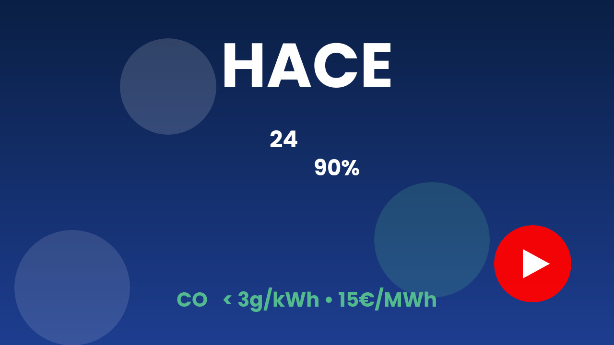
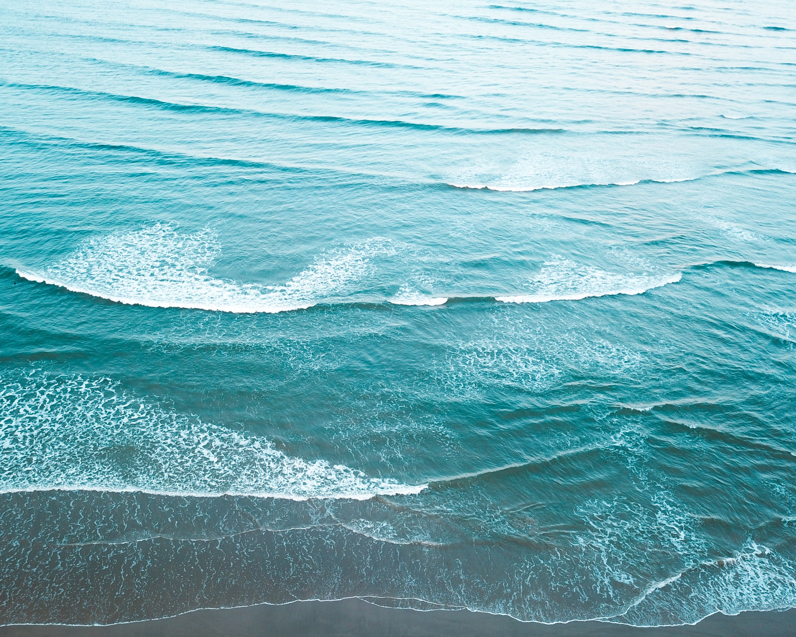

Dr. Jean-Luc Stanek
Presidente ejecutivo / CEO
Caballero del Mérito Marítimo
Transformamos las olas en electricidad. Limpia, competitiva, disponible las 24 horas.
Tres avances fundamentales que cambian la ecuación económica de la energía undimotriz.
Los convertidores actuales de energía undimotriz se adaptan mal a las condiciones variables del oleaje. Dimensionados para un rango estrecho, rinden poco con mar en calma y se detienen con mar agitado. Resultado: factor de capacidad bajo y costes de energía que nunca bajan.
Cada sistema se diseña a medida para su emplazamiento específico con el fin de maximizar el factor de capacidad — la clave de la viabilidad económica. El bajo coste de la electricidad es consecuencia directa de este enfoque.
La intermitencia es el talón de Aquiles de todas las energías renovables: solar, eólica y los convertidores actuales de olas se detienen o entran en modo de protección en cuanto las condiciones superan su rango operativo. Cada hora de inactividad reduce el factor de capacidad y hace insostenible el modelo de negocio.
HACE produce en las peores condiciones — ciclones, olas gigantes, tsunamis. Cuanto más agitado el mar, mayor la producción. El sistema es insumergible y diseñado para durar más de 50 años.
La complejidad de algunos convertidores de energía undimotriz impide su despliegue masivo. Requieren equipos pesados y costosos — grúas de gran capacidad, buques especializados, componentes a medida.
HACE se puede construir en cualquier astillero, sin equipos pesados. Columnas de agua oscilantes en acero estándar, enfoque de producción industrial en serie. Más del 95% reciclable.
Olas de 10 cm. Turbina a plena velocidad.



La energía undimotriz responde a mercados concretos, solventes y en crecimiento en todas las costas del mundo.
Potencial teórico estimado por la AIE. El consumo mundial de electricidad es de unos 25 000 TWh/año. La energía de las olas podría cubrir por sí sola esa demanda.
Islas, zonas costeras, países en desarrollo: demanda estructural de energía descarbonizada y agua dulce mediante desalinización.
Normativas de la OMI y la UE en curso. HACE proporciona energía "Absolute Zero" para puertos, abastecimiento de H₂ y alimentación en muelle.
Territorios insulares (coste del diésel 300-500 €/MWh), costas atlánticas europeas, litorales africanos, Caribe y Pacífico Sur.
Una alianza estratégica que reúne las mejores tecnologías para una cadena de valor H₂ completa y competitiva.
Energía estable, no intermitente, ultrabaja en carbono (desde 15 €/MWh, < 3 g eqCO₂/kWh) para alimentar electrolizadores de forma continua.
El electrolizador lo opera el cliente industrial o un socio certificado. HACE proporciona la energía ideal para hacerlo funcionar a plena capacidad, de forma continua, al menor coste posible.
Tanques de H₂ 20 veces más ligeros que los actuales: 1 tonelada de tanque por 1 tonelada de H₂ transportado. Revoluciona la logística.
Soluciones auxiliares para el uso del H₂ verde. Descarbonización del transporte terrestre, marítimo y aéreo.
Alianza mundial de más de 50 actores. HACE proporciona energía "Absolute Zero" para barcos y puertos.

Elimina los principales factores responsables de la erosión costera mediante el desfase de las órbitas moleculares del agua.
Favorece la reposición natural de sedimentos en las playas, sin intervención artificial.
Sin fluidos contaminantes, cero hormigón, anclaje biodinámico. Impacto positivo en la biodiversidad.
Energía + protección costera reduce el coste por uso. Diques flotantes, puertos deportivos, instalaciones costeras.
«La tecnología HACE se integra perfectamente en nuestra estrategia de transición energética portuaria. Su aceptación social y su respeto por la biodiversidad son activos fundamentales.»
«HACE va más allá proporcionando agua dulce y previniendo la erosión costera. ZESTAs se complace en asociarse con visionarios que abordan tanto la mitigación como la adaptación al cambio climático en una sola tecnología.»
«Como profesionales del mar, vemos en HACE una solución compatible con nuestras actividades. La protección costera es un beneficio considerable.»
«HACE representa un avance importante en la energía marina renovable. Su capacidad para producir hidrógeno verde competitivo abre perspectivas industriales considerables.»
HACE utiliza el principio de las Columnas de Agua Oscilantes Múltiples. Las olas entran en cámaras abiertas bajo el agua, comprimen el aire a través de válvulas unidireccionales, creando un flujo de aire continuo que acciona una turbina. El sistema funciona como un motor de pistones alimentado por las olas, optimizado en todo el espectro del oleaje.
Sí. HACE capta energía de todas las olas, incluso caóticas, desde 5 cm hasta más de 30 m. Insumergible, resistente a ciclones, olas gigantes y tsunamis. Vida útil validada de más de 50 años mediante cálculos y simulaciones numéricas.
Menos de 3 g eqCO₂/kWh en ciclo de vida completo. Comparación: solar ~40 g, eólica ~11 g, nuclear ~6 g. HACE lo consigue gracias a una construcción en acero 95% reciclable, sin hormigón.
LCOE desde 15 €/MWh para grandes parques bien ubicados (mar del Norte, Iroise). Como con la solar o la eólica, el precio final depende del tamaño de la instalación, el emplazamiento y la conexión a la red. El alto factor de capacidad (50-90% según el sitio) y el diseño específico para cada ubicación son las claves de esta competitividad.
Producción estable no intermitente, ideal para electrolizadores continuos. Resultado: H₂ verde por menos de 2 €/kg. En asociación con SHZ (almacenamiento 20 veces más ligero) y H2X (ecosistemas de uso final).
Impacto mínimo: cero hormigón, sin fluidos contaminantes, menos de 5 m sobre el agua, anclaje biodinámico. Bonus: protección activa contra la erosión costera y reposición natural de las playas.
Ingenieros, doctores, expertos offshore. Polytechnique, Supaéro, HEC, Centrale, SUPELEC, ENSAM, CNRS, MIT, ENA, Stanford…
Presidente ejecutivo / CEO
Caballero del Mérito Marítimo
Director de I+D
Ex-Airbus · Experto en aerodinámica
Experto en I+D
Experto en operaciones offshore
Experto financiero
Experto jurídico
Experto industrial
Director comercial
Director de informática y ciberseguridad
Inversores, socios industriales, colectividades: únanse al proyecto HACE.
Presidente ejecutivo / CEO — Caballero del Mérito Marítimo